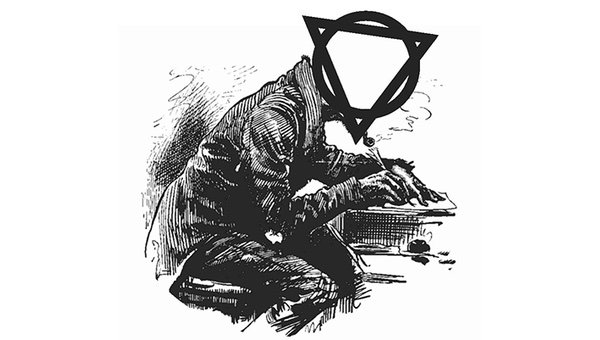

Circle & Triangle
"There is intelligent design, but we are the designers."
A month ago, Phil Davidson burst onto the scene with a series of albums that have seen him rocket to fame, fortune, and the kind of influence that could change the world. However, he shows clear signs of profound mental distress and many are calling for him to be locked up. We explore the damage he's doing and ask where he's taking us...
 Society
Society
Ten years after the AI Crash, we ask what happened to the dream of liberation and explore how life really looks while living under an AI Overlord...
 Theology
Theology
Jo and Bill's divorce has torn the west apart for two-thousand years. With its end in sight, we look back over the damage it's caused and ask whether the scars will ever heal...
What turned Phil's story from a light-weight puff-piece for a creative writing course into an obsession that has seen dozens of re-writes and consumed thousands of hours?

In the world of the book, the circle and triangle symbol came to represent Phil's revolution. But what's the story behind it? We sit down with the author to discuss the shape of things...